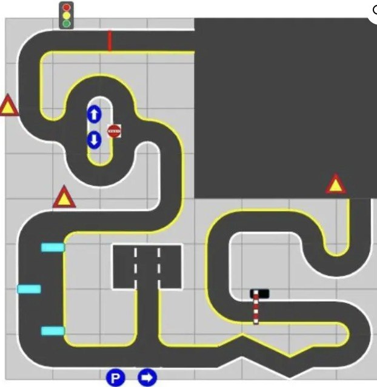

▲ 終點線位於上方紅色實線。行進方向：逆時針。

▲ 終點線位於上方紅色實線。行進方向：逆時針。
機器人從上方紅線起點出發，依序通過以下關卡：
| 顏色 | 位置 | 意義 |
|---|---|---|
| 黃線 | 行進方向左側 | 車道左邊界 |
| 白線 | 行進方向右側 | 車道右邊界 |
| 紅線 | 起點/終點（上方） | 起終點線 |
| 青藍色條 | 左側垂直路段 | 障礙物（閃避） |
| 技術 | 用途 |
|---|---|
| HSV 顏色空間 | 紅/黃/綠燈號偵測，比 BGR 更穩定 |
| 霍夫圓變換 | 在顏色遮罩中找圓形，確認是否為真實燈號 |
| 透視轉換 (Perspective Transform) | 將視角轉為 top-down，擠出消失點 |
| 滑動視窗 (Sliding Window) | 找出左側黃線、右側白線，計算中心線 |
| PID 控制 | 偏離中心線輸出 steering angle |
| 光源補償 | 隧道區曝光補償，須有備援機制 |
| 障礙物偵測 (Haar / YOLO) | 紅色三角標誌辨識 |
詳細實作狀態見 系統架構 頁面。